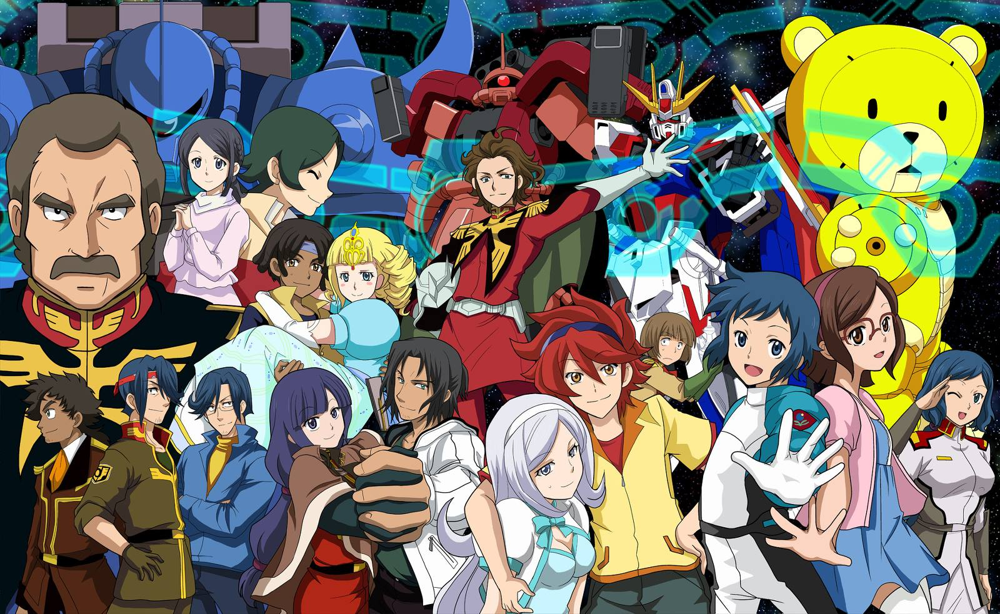

Crunchyroll: Anime Awards 2015-16 Winners
By Timothy Ma | July 12, 2016
Crunchyroll, North America's most popular anime website, has published the final results of its 4th annual Ichiban Anime Awards. With a whopping number of poll answers, find out which animes made it to the top of this year's best!
At most, there were 50 new and ongoing anime series but there were clear winners and must watch shows. We selected the most anticipated animes as well as popular series. Crunchyroll polled its anime viewers to find out, and this is what we found.
- Gundam Build Fighters
- Haikyuu!!
- Kiss Him, Not Me
- Occultic Nine
- Boruto
- Shokugeki No Soma
- The Great Passage
- Touken Ranbu
- Mobile Suit Gundam: Iron-Blooded Orphans
- Izetta: The Last Witch
- Mobile Suit Gundam Unicorn
- High School of the Dead
Make sure to check out this year's winners. We hope you're excited for next season's animes - don't forget to vote for our upcoming poll!